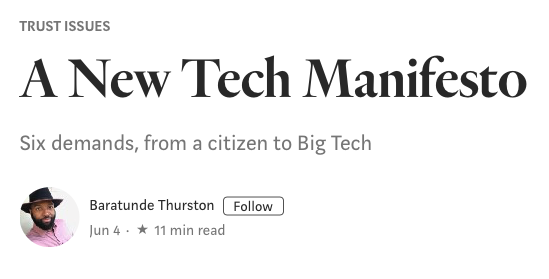
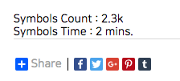
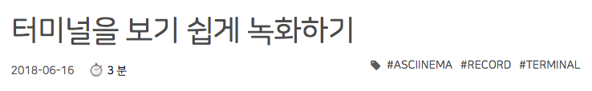

Hexo 글자 수와 리딩 타임 추가하기
블로그 서비스인 Medium 은 글을 읽을 때 소요될 시간을 미리 표시해줍니다. 독자들이 이 글을 읽는데 얼마나 소요될지를 미리 파악함으로써, 글의 질을 예측해볼 수 있고 이 글을 계속 읽을지 말지를 결정하는데 도움이 됩니다.

소소하지만 탐나는 기능이었습니다. Hexo 블로그에는 이런 기능이 없나 살펴봤더니 역시나 있었습니다. 이번 포스팅에서는 글자 수와 읽을 때 소요되는 시간을 보여주는 hexo-symbols-count-time 플러그인을 적용해보겠습니다.
설치 및 설정하기
설치는 다른 여타 플러그인과 마찬가지로 간단합니다.
1 | npm install hexo-symbols-count-time --save |
블로그 루트 폴더에 있는 _config.yml 에 설정 내용을 추가합니다.
1 | symbols_count_time: |
사용하기
세부적인 설정에 앞서서 잘 나오는지부터 테스트해보겠습니다. 해당 플러그인은 다음 세 가지 방식의 렌더러를 지원합니다.
- EJS: <%- template %>
- SWIG / Nunjucks:
- Jade: span= template
제가 사용하는 Hueman 테마는 ejs 를 사용합니다. 일단 적당한 곳에 추가를 해보겠습니다. article.ejs 를 열어 footer 위에 다음과 같이 추가해보겠습니다.
1 | Symbols Count : <%- symbolsCount(post.content) %><br> |
결과는 다음과 같이 잘 나오네요. 다른 테마를 사용하시는 분들도 테마 폴더에 있는 레이아웃 중에 원하시는 곳에 추가하시면 됩니다.

계산 방식
조금 더 세부적으로 살펴보겠습니다. 이 플러그인은 현재 포스트 (혹은 사이트 전체)의 글자수를 세고, 이 글자수를 바탕으로 단어가 몇 개인지 파악합니다. 이 때 설정하는 값이 AWL (평균단어길이) 입니다. 단어가 몇 개 정도인지 파악한 후에 1분 당 읽을 수 있는 글자수, 즉 읽는 속도를 바탕으로 읽는데 예상 소요 시간을 계산합니다. 이때 이 읽는 속도가 WPM (분당 읽는 단어) 입니다.
- AWL (Average Word Length) : 평균 단어 길이. 기본값은 4.
- WPM (Words Per Minute) : 분당 읽을 수 있는 단어. 즉 읽는 속도. 기본값은 275.
따라서, 만약 글자수가 4000개라면 -> 1000단어라고 보고 -> 분당 275단어니까 읽는 시간은 3.6분 정도로 계산하는 식입니다.
설정 변경하기
일단 추가한 위치를 수정해야겠습니다. 사용자가 본문을 읽기 전에 이 글의 양이 어느정도 되는지 전달하기 위해서는 제목 바로 아래에 추가하는 것이 더 좋겠네요. 다음으로 글자 수 자체로는 이 포스트의 양을 판단하기에 썩 도움이 되지 않을 것 같습니다. 그보다는 읽을 때 어느 정도 시간이 걸릴 지 소요되는 시간을 알려주는 것이 더 가치있는 정보일 것입니다. 그래서 저는 해당 포스트의 시간 정보만 보여주도록 설정하겠습니다.
그렇다면 평균 단어 길이(AWL)와 분당 글자 수(WPM)는 어떨까요? 한글 기준으로 띄어쓰기를 생각해본다면 평균적으로 3~5글자 정도인 것 같으니 디폴트 값인 4글자로 충분할 것 같습니다. 하지만 IT 블로그 특성 상 영어와 코드가 섞여 있기 때문에 글 읽는 속도인 WPM 은 좀 줄여서 210 정도로 설정하겠습니다.
해당 내용을 반영하여 article.ejs 파일에 다음과 같이 추가합니다. 저는 이모지를 이용해서 시계를 넣었습니다.
1 | <div class="article-subtitle"> |
그리고 왼쪽으로 여백을 주기 위해서 마진을 추가하겠습니다. style.styl 파일에 클래스를 추가합니다.
1 | .reading-time |
그럼 포스트 제목 아래에 다음과 같이 잘 나오는 걸 확인할 수 있습니다.

템플릿에 적용한 거라 나중에 템플릿에서 이모지를 변경하면 이전 포스트와 새로운 포스트 모두 적용되니 수정하기도 좋습니다.
이번 포스팅에서는 소소하지만 사용자에게 유용할만한 플러그인을 살펴봤습니다.